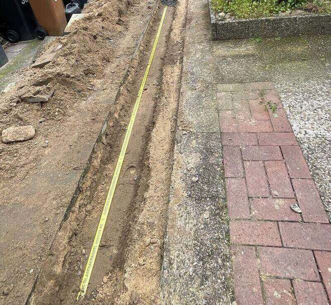

Bildarchiv
Ausführung,
nicht Inszenierung.
Jede Aufnahme stammt aus einem eigenen Einsatz. Keine Stockfotos, keine Renderings — Gräben, Rohre, Aufmaß und Wiederherstellung so, wie sie auf der Baustelle aussehen.
Nach Leistungsbereich filtern
Zu den Aufnahmen: Die Bilder zeigen ausgeführte Arbeiten aus laufenden Einsätzen.
Aus Rücksicht auf Auftraggeber und Beschäftigte nennen wir keine Projektadressen und
zeigen keine erkennbaren Personen.
Was die Bilder zeigen sollen
Drei Dinge, die man auf einer Baustelle sofort sieht.
Gerade Trassen
Eine saubere Trassenführung ist kein Zufall. Sie ist das Ergebnis von Aufmaß vor dem ersten Spatenstich.
Lagerichtige Bettung
Sandbett, Trassenband und Belegung nach Plan — das entscheidet über die Abnahme, nicht die Geschwindigkeit.
Wiederhergestellte Oberfläche
Nach der Verfüllung soll man nicht mehr sehen, dass hier gearbeitet wurde. Daran messen uns die Anwohner.
Nächster Schritt
Sie haben einen vergleichbaren Abschnitt?
Senden Sie uns Plan oder Leistungsverzeichnis. Wir antworten mit Einheitspreisen, Terminvorschlag und der Zusage, die Dokumentation täglich zu führen.